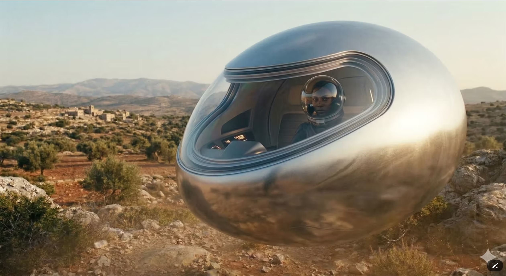
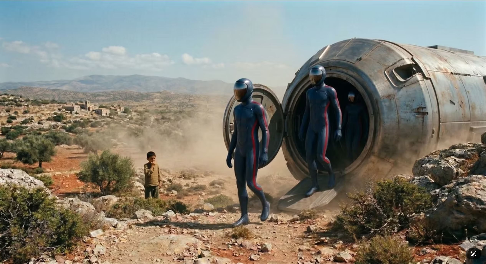
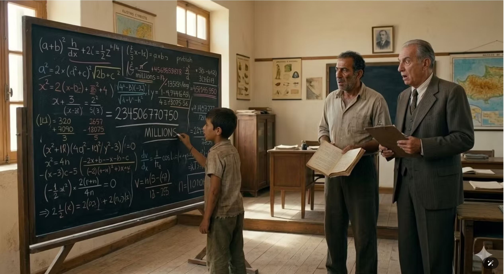

Description
This report documents in detail the events that took place in the Marathounta area of Paphos between 1945 and 1947, as recounted in the compelling testimony of Dionysios.
The account begins one afternoon when the witness, then only eleven years old, was in his family's fields tending the animals. The calm of the rural landscape was suddenly interrupted by the appearance of an object that tore across the sky at tremendous speed, coming from the North. Dionysios describes the craft as two metallic barrels joined together, emitting an intense glow.
On impact with the ground, the object raised an enormous cloud of dust and smoke, causing awe and fear in the child watching from a short distance. From the interior of the craft emerged three or four humanoid entities wearing form-fitting suits in deep blue. A distinctive detail of their clothing was a vivid red stripe that ran along the side of the suit from shoulder to feet.
The witness describes a state of absolute paralysis or hypnosis, during which he lost all sense of time. While it seemed to him only a few minutes passed, in reality he remained unaccounted for the entire night. His mother found him the next morning in a state of confusion, and on his body — specifically around the hip — a dark brown and blue mark had appeared that had not been there before. Due to the religious beliefs of the era, the local community interpreted the event as demonic possession, leading the child to the church for purification rituals.
About a month after the first incident, a second encounter took place — more interactive and decisive. This time the craft had an egg shape, was silver, and hovered silently above the ground without the use of propellers. One of the occupants, wearing a transparent helmet that resembled a glass sphere, approached Dionysios and spoke to him in the Cypriot dialect, urging him not to be afraid. In a gesture that sealed the contact, the stranger asked the child for his tsakkoudi — the traditional folding knife he carried. Dionysios handed it over, and the stranger promised him that in exchange he would open his mind and make him the most intelligent man, assuring him that he would never need to be afraid of anything in his life again.
The transformation that followed over the next days was stunning to those around the child. Dionysios, who until then had received no real education and was considered a simple country boy, suddenly acquired extraordinary intellectual abilities. He began performing complex mental arithmetic with millions of digits in seconds, surpassing even his teacher in speed. At the same time, he developed a remarkable photographic memory that allowed him to memorise entire history books after a single reading. The school inspector who was called to examine him was left speechless by the details the child could recall, describing him as a rare genius. This event did not remain only a personal experience — it was later linked to wider reports of unidentified activity in the Paphos region, which were even recorded in declassified documents of foreign intelligence services.
Dionysios himself, in his recorded testimony, maintains to the end the position that these entities were friendly and that their intervention gave him the gift of knowledge, which helped him become a successful man. His story remains one of the most documented cases in Cyprus where a close encounter led to a permanent and measurable enhancement of human intellectual abilities. The witness's interview is preserved in digital form in the archive.
Source Material




Source: Dr. Georgios Florides, UAP Cyprus.
Notes
This case remains under investigation. If you witnessed this event or have additional documentation, please contact us via the Report a UAP form.